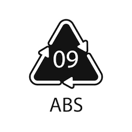

ACRILONITRILO BUTADIENO ESTIRENO

El acrilonitrilo butadieno estireno o ABS (por sus siglas en inglés Acrylonitrile Butadiene Styrene) es un plástico muy resistente al impacto (golpes) muy utilizado en automoción y otros usos tanto industriales como domésticos. Es un termoplástico amorfo.
Se le llama plástico de ingeniería o plástico de alta ingeniería debido a que es un plástico cuya elaboración y procesamiento es más complejo que los plásticos comunes, como son las polioleofinas (polietileno, polipropileno).